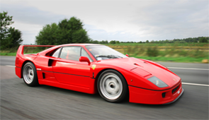
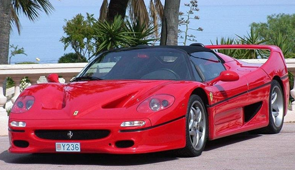
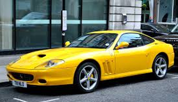

Ferrari F40
Ferrari F40 — среднемоторный двухдверный заднеприводный суперкар, имеющий кузов типа берлинетта.
Производился Ferrari с 1987 по 1992.
Автомобиль основан на шасси GTO Evoluzione, является дальнейшим развитием для гоночной версии Ferrari 288
GTO. В общей сложности было произведено 1315 таких авто.
С 1987 по 1989 год он носил титул самого быстрого в мире серийного автомобиля для дорог общего пользования,
и за время его производства был самым быстрым, самым мощным,
самым дорогим автомобилем Ferrari[источник не указан 1772 дня. Первоначально компания Ferrari объявила цену
в 400.000 долларов за автомобиль, но в дальнейшем некоторые
покупатели сообщали, что купили F40 за 1 600 000 долларов.

Ferrari F50
Ferrari F50 — двухместный спорткар, выпускавшийся итальянской автомобильной компанией Ferrari в период с
1995 по 1997 год.
Задачей F50 было предложить ощущения от вождения, максимально близкие к «Формуле-1». Двигатель получили в
результате доработки 3,5-литрового мотора,
который в Ferrari F1 использовали в сезонах 1992 г. и 1993 г. Для F50, однако, его рабочий объём увеличили
до 4,7 л. На ранних этапах разработки в
Ferrari экспериментировали с 4,2-литровым двигателем, но стало ясно: чтобы достичь плановых характеристик,
необходимы ещё пол-литра.

Ferrari 575
Ferrari 575 Maranello — двухместный спортивный автомобиль, выпускавшийся в кузовах купе и кабриолет.
Автомобиль появился в 1996 году, имел 5,5 л V12 двигатель мощностью 485 л.с. и крутящим моментом 568 Нм. В 2000
году на парижском автосалоне был представлен открытый вариант — 550 Barchetta. Всего было выпущено 448 открытых версий.
Название автомобиля указывает на объём двигателя (5,5 л), а в Маранелло находится штаб-квартира Ferrari.
Линейку 550 в 2002 году заменила серия 575M Maranello.
Ferrari Testarossa
Ferrari Testarossa — 12-цилиндровый среднемоторный спортивный автомобиль компании Ferrari.
Выпускался с 1984 года, заменив на конвейере Ferrari Berlinetta Boxer. Разработан в ателье Pininfarina.
Оригинальный Testarossa выпускался с 1984 по 1991 год, после чего был модернизирован и переименован в 512 TR (1991—1994) и F512 M (1994—1996).
Testarossa стала одной из самых успешных моделей Ferrari, за всё время производства было выпущено почти 10,000: 7177 штук Testarossa, 2280 штук 512 TR, и 500 штук F512 M.
Стоит отметить, что главным подобным вдохновением последующего творения итальянского дизайн-бюро Pininfarina стало первое слепое поколение легендарного спортивного купе
Mitsubishi 3000GT, имещее множество схожих черт с Testarossa. В последствии эту модель так и прозвали «японская Ferrari»